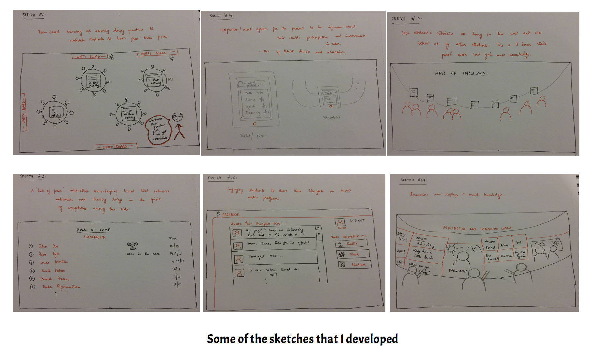
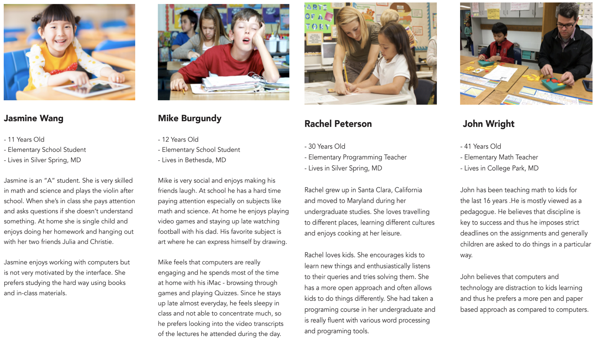
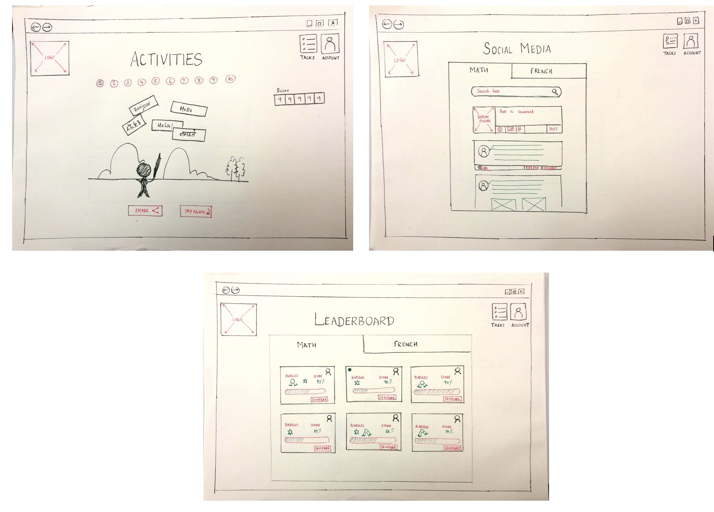
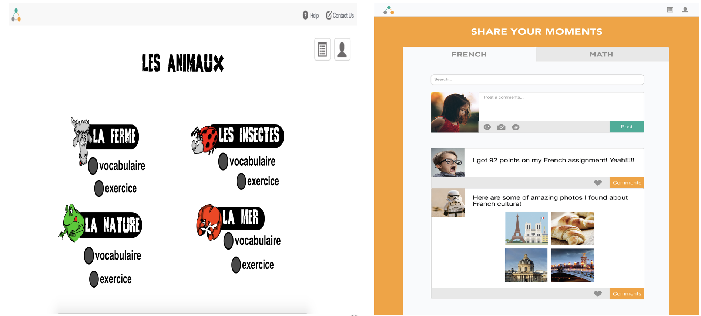

DOT DOT DOT
An Interactive Web based Learning Tool for Elementary School Kids
- Duration: Fall 2017 - Team Project
- Course: Introduction to Human Computer Interaction
- Tools and Methods: Sketching, Contextual Inquiries, Cognitive Walkthroughs, Semi-structured interviews, Heuristic Evaluation, InVision, Adobe Photoshop, Adobe Illustrator and Adobe Indesign
- My Role: UX Researcher - developed low-fi prototypes and personas, design sketches, conducted semi-structured interviews and heuristic evaluation, designed process book and design specification using Adobe InDesign.
In our Introduction to HCI course, we were split into teams of 4 and given a common topic - Engaging Communities - to base our semester long project upon. While brainstorming on which community to focus on our project, all of us collectively decided to design solutions that deal with issues faced by elementary school kids in their education.
Motivation
Our team project is based on improving kid’s education in elementary schools through interactive learning systems. Our main motivation for choosing this project is that we observed that the kids were having great difficulty focusing on learning the materials provided in class as they were not engaged or motivated enough.
Project Goals
Through this project, we attempt to address the problem of student distraction and lack of interest while dealing with topics of difficulty. We mainly focus on the following aspects in our project-
- Making kids motivated and engaged in learning the curriculum through interactive systems
- Bring about better Parents-Kids engagement in their kid's education
- Better Parent-Teacher communication systems for both the sides to be aware of the kid's progress.
Our Process
The approach that we took to design this project is divided into five phases - Design Problem, Brainstorming, Analysis, Prototyping and Evaluation.

Design Problem
On observing a coding classroom for the elementary school kids at the Washington Cathay Pacific Center, we noticed that the kids were
focussed on moving up through the levels in the game based learning exercise but were not keen on looking into the javascript code that followed it. We also noticed that the students were demotivated and were not finding the exercises engaging.
The lead causes for the kid’s lack of interest are the difficulty of the materials, different interests based on their genders, the presentation of the learning materials, and the different adaptability rates.
Problem: Distraction among Elementary Kids in Classrooms
Brainstorming
With this design problem in mind, I conducted semi-structured interviews with elementary school teachers and parents. Through these interviews, I learnt that the kids were not looking into the JavaScript code that popped up in the interface inspite of repeated instructions due to growing interest in progressing through the game-based activity rather than learning something out of it.
The main concern that the teachers put forth was that the students were getting anxious and less-motivated as the levels of the program became more complex and it starts to become difficult for him to bring their focus to one place. The parents mentioned that they felt the use of technology to enhance their kid's knowledge is good in a way that it helps them stay engaged, motivates and promotes healthy competition in an interactive manner.
Solution: Design Engaging and Interactive Learning Experiences
From our semi-structured interviews, we found the crux of the issue that the kids are facing that distracts them during classroom activities. To design creative and engaging learning experiences, we performed card sorting technique to analyse their problem in an effective manner. Followed by card sorting, each of us sketched 40 ideas and collectively gathered all of them to find out which idea would best suit the needs of our design problem.
Analysis
Post our brainstorming phase, we developed personas and scenarios to support our ideas. The personas that we developed were of kids, teachers and parents. We drew several key insights to accomodate these personas in our designs.
Prototyping
For testing the developed personas and scenarios, we then developed low and high-fidelity prototypes to help understand the user experience of our tool. From the sketches that we developed, three major ideas stood out - Social Media for kids to promote knowledge transfer, Leaderboard to encourage healthy competition and Game-based learning activities to engage the kids - which we have focused on our prototypes.
Low Fidelity Prototype
The purpose of this design is to provide an easy to use interface for a web based tool that will be used by elementary and middle students (ages 7 to 13) and teachers. Our main objective is to keep students engaged in the classroom and decrease distractions. We plan to do so by making students compete against each other through a real-time reward system. Students may compete with each other for bragging rights or prizes (badges, candy, etc). Teachers who manage students can create activities and assignments, grade and award points and badged, and communicate with students and parents through the platforms social media features.
High Fidelity Prototype
Our high-fidelity prototype shows the various screens of our interactive tool majorly focussing on the leaderboard and game based learning approaches. We feel that the game-based learning approach gives a sense of connectedness and encouragement for the kids, whereas the leaderboard gives a sense of competitiveness that gives the kids motivation to excel in their education.

Evaluation
With our low fidelity prototypes and high fidelity prototypes, I conducted heuristic evaluation and cognitive walkthroughs with expert users. The users commented that the tool provided an engaging and interesting way to learn, the icons were large thus being simple and easy to use for elementary kids.On the other hand, certain issues that the experts faced with our tool was that, proper feedback and current status of thetool was lacking. Also, it was mentioned that some of the buttons were also not accessible as full functionality was not included in the prototype. Finally, the experts also suggested that addition of previous screen navigation button could be very useful incases where the kid erroneously clicks on a button and there is no undo option. From all the feedback that we received through all our evaluation, we analysed and modified the high-fidelity prototype according to the feedback received.
Demo Video
To aid our design solution, we created a video prototype and animation of our interactive tool using Adobe AfterEffects.